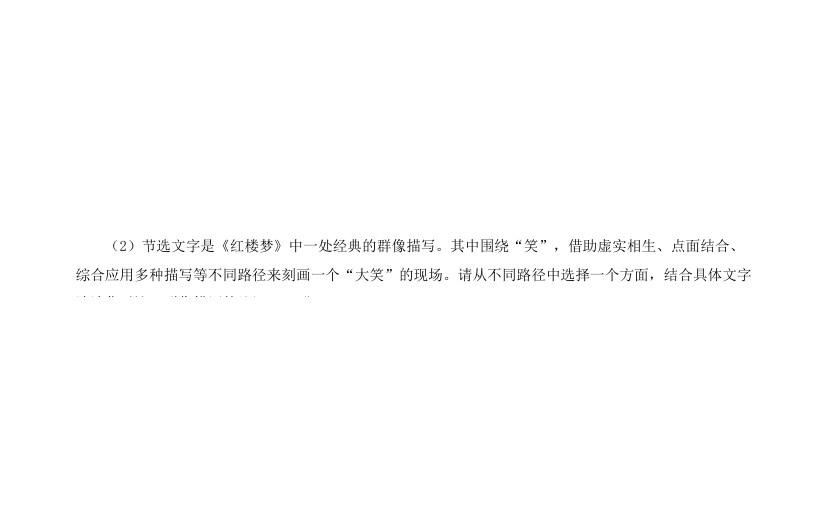
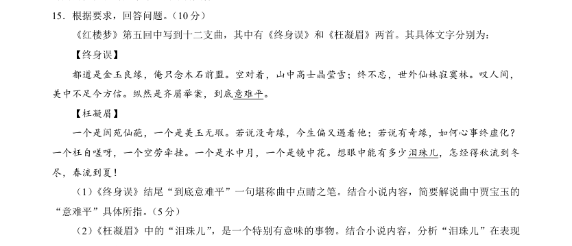
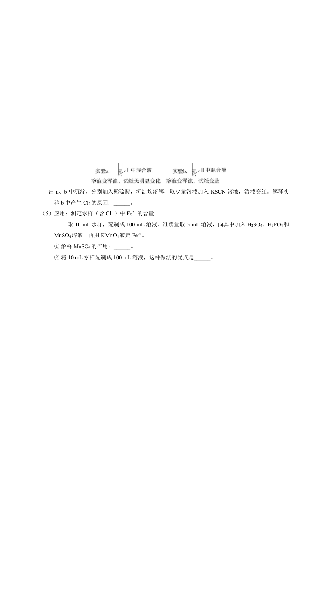
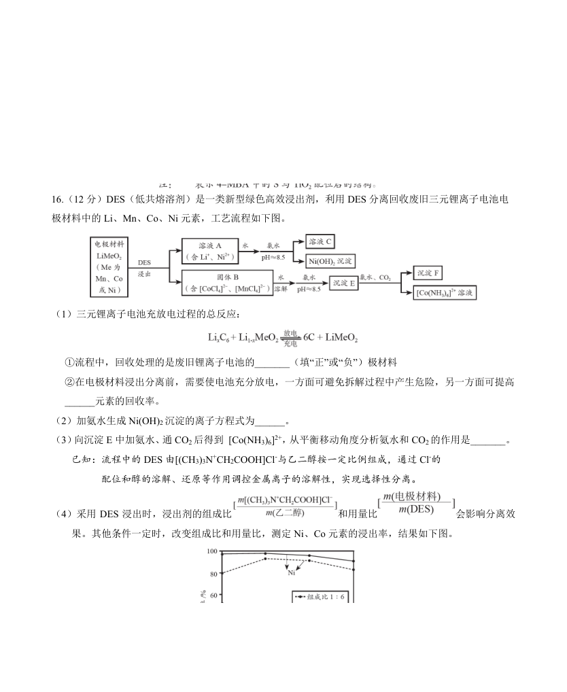

每日一题 · 2026-11-20
4 道题：语文·红楼梦 2 + 化学大题 2 ｜ 先做再看答案
1
2026北京西城高三二模
语文·红楼梦
15. 阅读《红楼梦》第四十回的文字（节选），根据要求，回答问题。（10 分）
贾母这边说声“请”，刘姥姥便站起身来，高声说道：“老刘，老刘，食量大似牛。吃一个老母猪不
抬头！”自己却鼓着腮不语。
众人先是发怔，后来一听，上上下下都哈哈哈的大笑起来。史湘云撑不住，一口饭都喷了出来；林黛
玉笑岔了气，伏着桌子嗳哟；宝玉早滚到贾母怀里，贾母笑的搂着宝玉叫“心肝”；王夫人笑的用手指着 凤姐儿，只说不出话来；薛姨妈也撑不住，口里茶喷了探春一裙子；探春手里的饭碗都合在迎春身上；惜 春离了坐位，拉着他奶母叫揉一揉肠子。地下的无一个不弯腰屈背，也有躲出去蹲着笑去的，也有忍着笑 上来替他姊妹换衣裳的，独有凤姐鸳鸯二人撑着，还只管让刘姥姥。
（1）这里写的是一个场境，其中也有人物个性的鲜明呈现。请任选一个具体形象，概述小说中另外 一处能与此处形象特点呼应的片段，并分析其具体特点。（5 分）
（2）节选文字是《红楼梦》中一处经典的群像描写。其中围绕“笑”，借助虚实相生、点面结合、 综合应用多种描写等不同路径来刻画一个“大笑”的现场。请从不同路径中选择一个方面，结合具体文字 谈谈你对这一群像描写的认识。（5 分）
原题原图（含图表，点开放大）

来源：试卷库/2026/二模/语文/2026北京西城高三二模语文.pdf · 第 15 题
参考答案（点开）
15．（10 分）
（1）（5 分）略
评分参考：片段选取合理并概述得当，3 分；特点分析，2 分。合乎情理即可。
（2）（5 分）略
可以从虚实相生、点面结合、综合应用描写方法等方面任选一个，结合原文并展开分析。
评分参考：答问体现出虚、实，点、面，综合，2 分；分析，2 分；语言表达，1 分。
意思对即可。有其他合理答案，酌情给分。
2
2026北京西城高三（上）期末
语文·红楼梦
15．根据要求，回答问题。（10 分）
《红楼梦》第五回中写到十二支曲，其中有《终身误》和《枉凝眉》两首。其具体文字分别为：
【终身误】
都道是金玉良缘，俺只念木石前盟。空对着，山中高士晶莹雪；终不忘，世外仙姝寂寞林。叹人间，
美中不足今方信。纵然是齐眉举案，到底意难平。
【枉凝眉】
一个是阆苑仙葩，一个是美玉无瑕。若说没奇缘，今生偏又遇着他；若说有奇缘，如何心事终虚化？
一个枉自嗟呀，一个空劳牵挂。一个是水中月，一个是镜中花。想眼中能有多少泪珠儿，怎经得秋流到冬
尽，春流到夏！
（1）《终身误》结尾“到底意难平”一句堪称曲中点睛之笔。结合小说内容，简要解说曲中贾宝玉的
“意难平”具体所指。（5 分）
（2）《枉凝眉》中的“泪珠儿”，是一个特别有意味的事物。结合小说内容，分析“泪珠儿”在表现
林黛玉人物形象时的作用。（5 分）
原题原图（含图表，点开放大）

来源：试卷库/2026/期末/语文/2026北京西城高三（上）期末语文.pdf · 第 15 题
参考答案（点开）
15．（1）（5 分）答案示例：
意难平，指宝玉感情生活中的难以释怀和于心不甘。
具体指：
①对“木石前盟”爱情幻灭感到悲痛遗憾，却又无力回天；
②对“金玉良缘”婚姻事实想要疏离抗拒，却又无可奈何。
评分参考：“意难平”解释，1 分。具体内容，每写出一点，得 2 分。意思对即可。
（2）（5 分） 答案要点： 泪珠儿，是寄托黛玉情感的平凡事物和典型意象。 作用： ①泪珠儿是黛玉“以泪还情”宿命的生活化反映，折射了黛玉情感的纯粹专注； ②泪珠儿也是黛玉寄人篱下以及爱而不得以至于“以泪洗面”悲情的直接载体，烘托 了黛玉命运的悲惨不 济。 评分参考：“泪珠儿”意义，1 分。具体作用，每写出一点，得 2 分。意思对即可。
3
2025北京朝阳高三一模
化学实验-探究与测定
19．（13 分）
实验小组探究 Cl 对 KMnO4 测定 $\mathrm{Fe}^{2+}$含量的影响。
－
（1）理论分析
－
依据元素周期律，Cl 半径大，较易＿＿＿＿电子，有还原性，可能影响测定结果。
（2）比较 Cl
－
与 $\mathrm{Fe}^{2+}$ 的还原性能为测定条件的选择提供参考，设计实验：
取少量 MnO2，加入 2 mL 物质 A 的溶液，A 是＿＿＿＿。经检验，证实了 $\mathrm{Fe}^{2+}$ 的还原性强于
－
Cl 。
－
（3）探究不同条件下 Cl 能否被 KMnO4 氧化
实验：向 0.5 mL 0.1 mol·L-1 KMnO4 溶液中加入溶液 X，用湿润的碘化钾淀粉试纸检验气体，结
果如下。
实验编号
溶液 X
试纸颜色
Ⅰ
0.5 mL 1 mol·L-1 NaCl 溶液
无明显变化
Ⅱ
0.5 mL 饱和 NaCl 溶液
无明显变化
Ⅲ
0.5 mL 1 mol·L-1 NaCl 溶液 + 2 滴 H2SO4
无明显变化
Ⅳ
0.5 mL 1 mol·L-1 NaCl 溶液 + 8 滴 H2SO4
试纸变蓝
① 根据该实验，可以得出的结论是＿＿＿＿。
－
② 探究 Cl 浓度对反应的影响，设计实验Ⅴ：＿＿＿＿（填实验操作和现象）。综合Ⅰ～Ⅴ，一定酸性时，
－
证实 Cl 浓度大更易被氧化。
（4）根据Ⅰ、Ⅱ的结果，进一步探究 Cl 对 KMnO4 测定 $\mathrm{Fe}^{2+}$的影响。实验如下：把 FeSO4
－
溶液加入到Ⅰ、Ⅱ实验后的混合液中，用湿润的碘化钾淀粉试纸检验气体。
出 a、b 中沉淀，分别加入稀硫酸，沉淀均溶解，取少量溶液加入 KSCN 溶液，溶液变红。解释实
验 b 中产生 $\mathrm{Cl}_2$ 的原因：＿＿＿＿。
（5）应用：测定水样（含 Cl ）中 $\mathrm{Fe}^{2+}$ 的含量
－
取 10 mL 水样，配制成 100 mL 溶液。准确量取 5 mL 溶液，向其中加入 H2SO4、H3PO4 和
MnSO4 溶液，再用 KMnO4 滴定 $\mathrm{Fe}^{2+}$。
① 解释 MnSO4 的作用：＿＿＿＿。
② 将 10 mL 水样配制成 100 mL 溶液，这种做法的优点是＿＿＿＿。
原题原图（含图表，点开放大）

来源：试卷库/2025/一模/化学/2025北京朝阳高三一模化学.pdf · 第 19 题
参考答案（点开）
（13 分）
（1）失去
（2）FeCl2
－
－
－
（3）① 中性条件下，Cl 较难被 KMnO4 氧化；当 c(Cl )相同时，增大 c(H+) ，有利于 Cl 氧化
﹣
② 向 0.5 mL 0.1 mol·L 1 KMnO4 溶液中加入 0.5 mL 饱和 NaCl 溶液，滴加少于 8 滴硫酸时，湿润的 KI
淀粉试纸变蓝。
﹣
﹣
（向 0.5 mL 0.1 mol·L 1 KMnO4 溶液中加入 0.5 mL 浓度小于 1 mol·L 1 NaCl 溶
﹣
液，加入 8 滴硫酸，湿润的 KI 淀粉试纸不变蓝；或向 0.5 mL 0.1 mol·L 1KMnO4 溶液中加入浓
﹣
度大于 1 mol·L 1 NaCl 溶液，滴加 8 滴硫酸，湿润的 KI 淀粉试纸更易变蓝。其他方案合理亦
可）
－
（4）MnO－4 氧化 $\mathrm{Fe}^{2+}$的过程中产生 H+，溶液酸性增强，MnO－4 氧化性增强；c(Cl ) 浓度大，
Cl－的还原性增强；$\mathrm{Fe}^{2+}$ 促进了 MnO－4 与 Cl－的反应
（5）① 降低 MnO－4 的氧化性，防止氧化 Cl
－
－
－
② 提高测量准确度；降低 c(Cl ) ，减小 Cl 的还原性
4
2026北京海淀高三一模
工艺流程
16.（12 分）DES（低共熔溶剂）是一类新型绿色高效浸出剂，利用 DES 分离回收废旧三元锂离子电池电
极材料中的 Li、Mn、Co、Ni 元素，工艺流程如下图。
（1）三元锂离子电池充放电过程的总反应：
①流程中，回收处理的是废旧锂离子电池的＿＿＿＿_（填“正”或“负”）极材料
②在电极材料浸出分离前，需要使电池充分放电，一方面可避免拆解过程中产生危险，另一方面可提高
＿＿＿＿元素的回收率。
（2）加氨水生成 Ni(OH)2 沉淀的离子方程式为＿＿＿＿。
（3）向沉淀 E 中加氨水、通 CO2 后得到 [Co(NH3)6]2+，从平衡移动角度分析氨水和 CO2 的作用是＿＿＿＿_。
已知：流程中的 DES 由[(CH3)3N+CH2COOH]Cl-与乙二醇按一定比例组成，通过 Cl-的
配位和醇的溶解、还原等作用调控金属离子的溶解性，实现选择性分离。
（4）采用 DES 浸出时，浸出剂的组成比
和用量比
会影响分离效
果。其他条件一定时，改变组成比和用量比，测定 Ni、Co 元素的浸出率，结果如下图。
①分离效果最佳的组成比和用量比分别为＿＿＿＿、＿＿＿＿。
②用量比相同时，组成比为 1：9 的 Co 浸出率显著高于组成比为 1：6 的 Co 浸出率，
结合已知信息解释原因：＿＿＿＿。
③浸出后需要对 DES 进行回收利用。若浸出分离后各组分所含的[(CH3)3N+CH2COOH]Cl与乙二醇回收率均为 100%，回收到的 DES 组成比会变大，原因是＿＿＿＿。
原题原图（含图表，点开放大）

来源：试卷库/2026/一模/化学/2026北京海淀高三一模化学.pdf · 第 16 题
参考答案（点开）
（12 分）
（1）①正
②Li
（2）Ni+ + 2 NH3·H2O === Ni(OH)2↓+ 2 NH₄⁺
（3）Co(OH)2 (s) ⇌ $\mathrm{Co}^{2+}$(aq) + 2OH-(aq) ，NH3 与 $\mathrm{Co}^{2+}$发生络合反应， CO2 能与 OH-反应
生成 CO32-，均能使平衡正向移动
（4）① 0.04
1:6
② 组成比小，[(CH3)3N+CH2COOH]Cl-相对含量较小，$\mathrm{Co}^{2+}$形成的[CoCl4]²-少；乙二醇
含量较大，能溶解较多 $\mathrm{Co}^{2+}$，使得 Co 元素浸出率增大
③ 乙二醇还原金属阳离子，有消耗